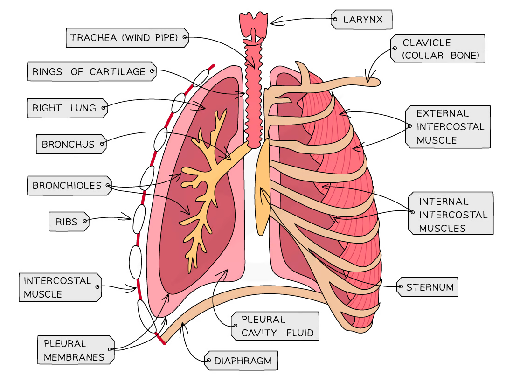

school
The respiratory system
- The thorax is the ribs and the upper backbone, along with the organs
found in the chest
- The thorax contains the:
- Trachea
- The trachea branches into two bronchi, one for each lung
- Bronchi
- The bronchi split into smaller tubes, called bronchioles
- Alveoli
- The alveoli are attached to the bronchioles
- Ribs
- Bones that protect the thorax
- Intercostal muscles
- Muscles between the ribs that raise and lower the ribcage
- Pleural membranes
- The membrane that the lungs are located in
- Diaphragm
- The diaphragm is a muscle located below the lungs
- When you inhale:
- The internal intercostal muscles relax while the external
intercostal muscles contract, which pulls the ribcage upwards and
outwards
- The diaphragm contracts, pulling downwards
- The lung volume increases and the air pressure decreases
- Air is pushed into the lungs
- When you exhale:
- The external intercostal muscles relax while the internal
intercostal muscles contract, which pulls the ribcage downwards and
inwards
- The diaphragm relaxes, moving upwards
- The lung volume decreases and the air pressure increases
- Air is pushed out of the lungs
- Gas exchange happens in the alveoli
- The alveoli have:
- Thin walls
- A large surface area
- A moist surface
- Lots of blood capillaries
- The air goes into the alveoli
- The CO2 goes into
the alveoli
- The O2 goes
into the deoxygenated blood
- The blood is then oxygenated
- Exercise and breathing
- The muscle cells require more energy when exercising. This means
they need to respire more, requiring more oxygen, and they produce more
waste CO2
- Because of this, the heart rate increases to pump blood faster
- The rate of breathing also increases in order to supply more
oxygen
- Adrenaline is secreted when we are afraid or angry, which also
causes the above changes

Lungs|700